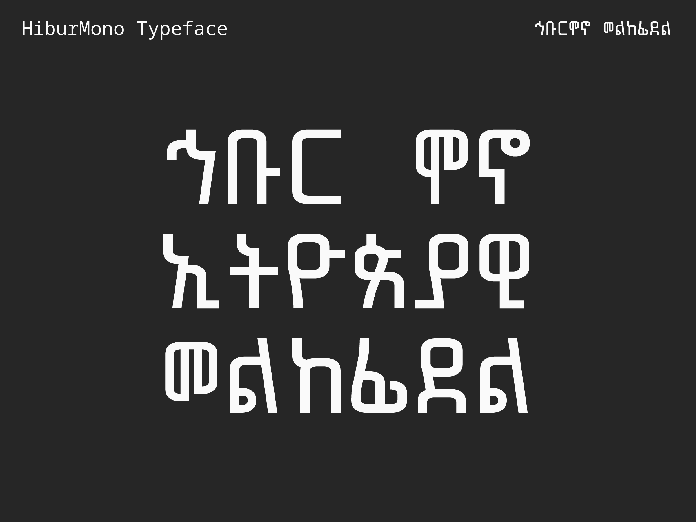
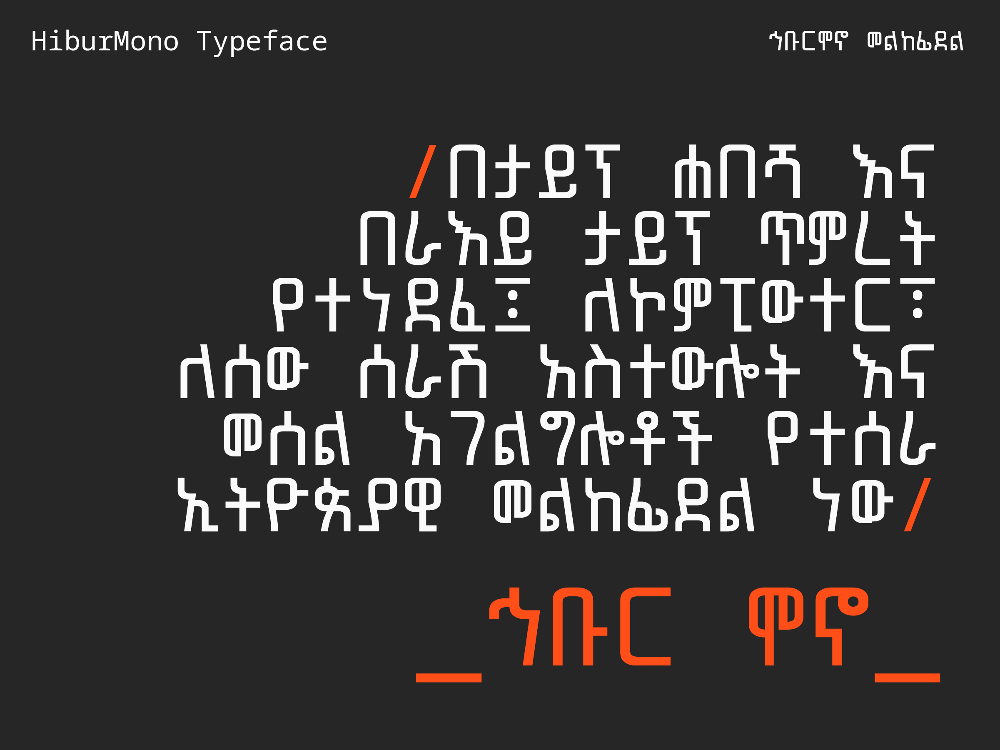
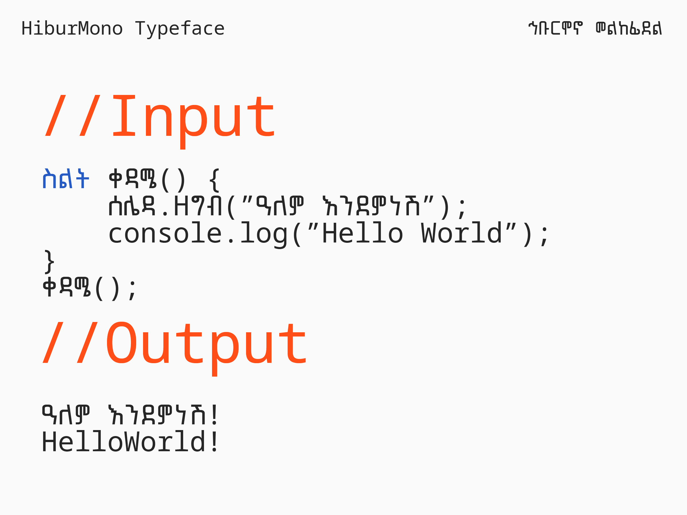
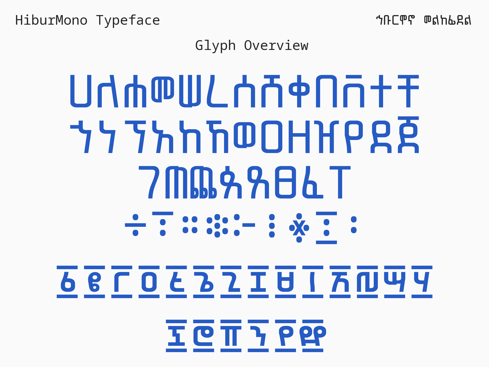
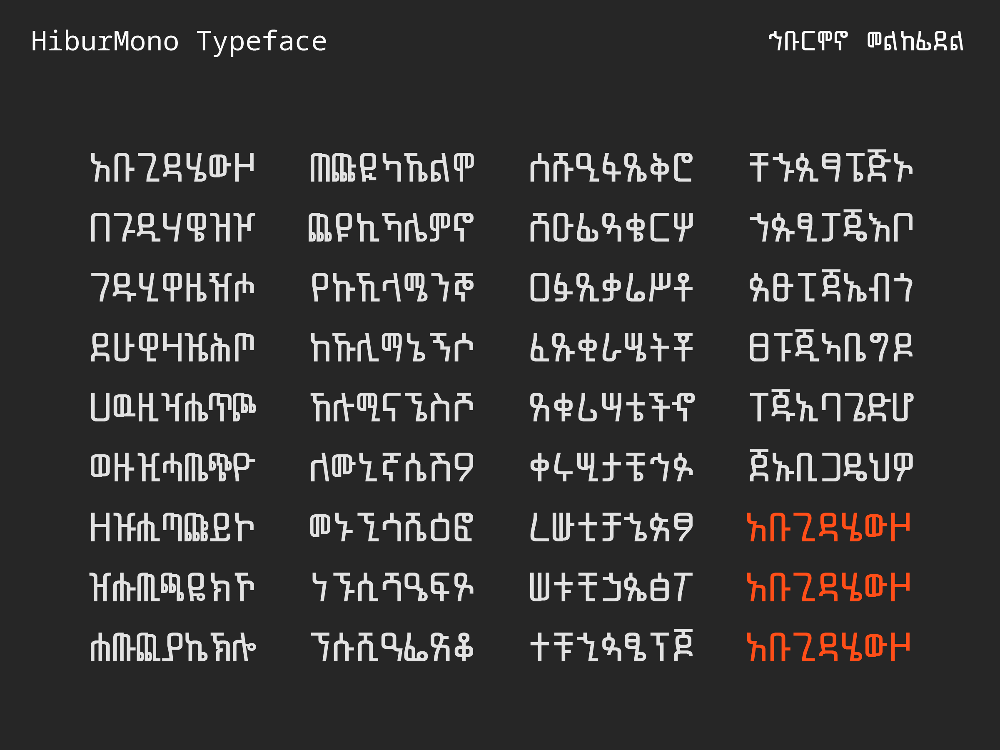
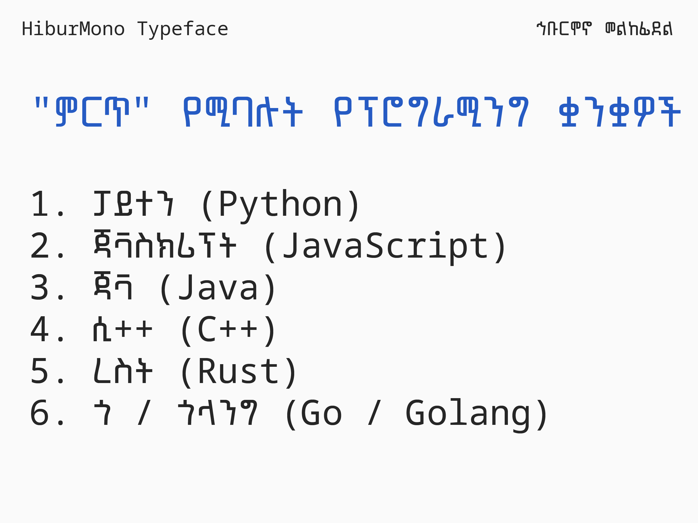
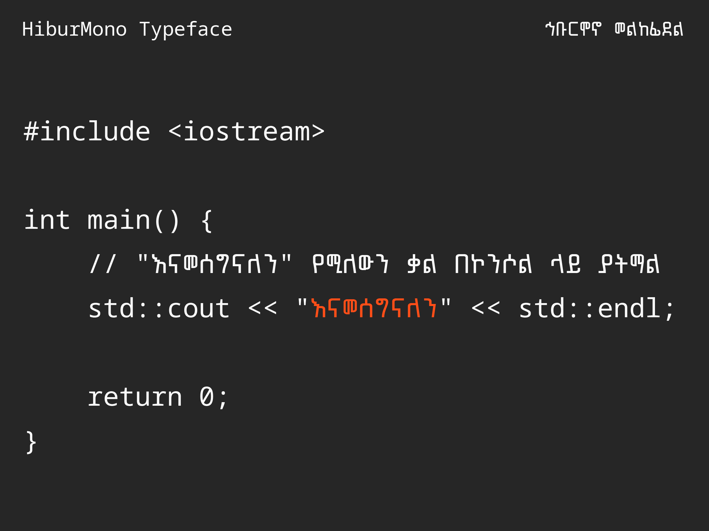
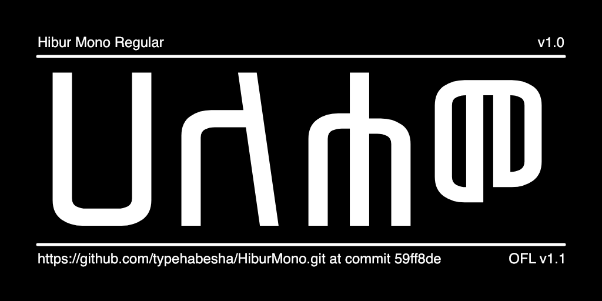

Hibur Mono is a single weight, monospaced, Ethiopic typeface designed for columnar display environments such as computer terminals and software code development interfaces.
The Hibur Mono Ethiopic glyphs have been designed from the ground up and optimized for the fixed width contraints of a monospaced typeface. Hibur Mono is compatible with the Noto Sans Mono geometric dimensions. The non-Ethiopic glyphs in Hibur Mono have also been leveraged from Noto Sans Mono.
To contribute to the project, visit github.com/typehabesha/HiburMono







